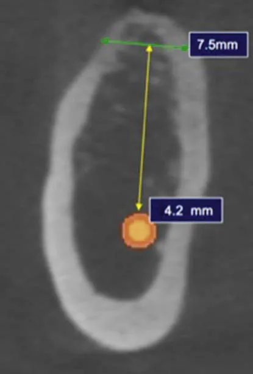
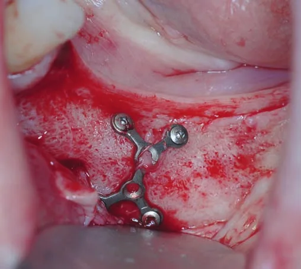

نسخه استخراجشده؛ ترجمه یا تأیید علمی انجام نشده است. وضعیت: captured
در اسپلیت ریج، بهجای اینکه استخوان را روی ریج بگذاری، ریج موجود را باز میکنی و ایمپلنت را در فضای ایجادشده جای میدهی. مزیت روشن است: نیازی به محل دهنده نیست. اما این تکنیک یک مرز دارد.
مرز: استفاده از استئوتوم یا اسپلیت ریج در ریج کمتر از ۳ میلیمتر قابلپیشبینی نیست. در چنین مواردی، پیوند اونلی اندیکاسیون دارد و باید با بیمار در میان گذاشته شود.
و شرط دومی هم هست: اگر ریج نازک است و هنگام بررسی به سمت فوقانی گشاد نمیشود، همان حکم برقرار است. یعنی صرفِ عدد کافی نیست؛ شکل مقطع هم باید اجازهی بازشدن بدهد.
گامهای عملی کاشت در کرست باریک ماگزیلا: چون کرست ماگزیلا معمولاً لبههای تیز و شیبدار دارد، نخستین گام ایجاد یک فرورفتگی در ریج است تا متهها بتوانند دقیق درگیر شوند.
محلهای ایمپلنت با رانژور یا فرز گرد علامتگذاری میشوند و همین فرز گرد استئوتومی را آغاز میکند و موقعیت ایمپلنت را در وسط کرست تعیین میکند. سپس متههای تدریجاً بزرگتر محل را گسترش میدهند تا متهی نهایی. معمولاً عرض ریج برای کاشت کافی است؛ ولی اگر بیشازحد باریک باشد، پیش از کاشت به پیوند نیاز دارد.
چرا این گام اول اهمیت دارد؟ چون روی یک لبهی تیز و شیبدار، مته میلغزد و موقعیت نهایی ایمپلنت را از مرکز کرست خارج میکند — و در ریج باریک، خروج از مرکز یعنی پرفوراسیون یکی از دو پلیت.

در استئوتومی بینابینی (اینلی/ساندویچ)، یک استئوتومی افقی قطعهی آلوئولار را جدا میکند، آن را بالا میبرد و فاصلهی ایجادشده را پیوند میزند — درست برخلاف پیوند اونلی که ماده را روی ریج میگذارد.
چرا این تفاوت مهم است؟ مطالعات نتیجهی روشنی دارند: گرافتهای اینلی بهتر از گرافتهای اونلی زنده میمانند. دلیلی که مطرح شده این است که گرافت بینابینی از همهی طرف با استخوان و پریوست احاطه شده و همین اتصال عروقی سریع با بافتهای اطراف را تسهیل میکند.
آنچه بافتشناسی نشان میدهد: پس از ۴ هفته لاکوناهای استخوان پیوندی خالیاند و بافت فیبروز سلولی حاوی رگ در فضاهای مغزی دیده میشود؛ پس از ۱۲ هفته گرافتها تقریباً از استخوان بومی اطراف قابلتشخیص نیستند و کاملاً یکپارچه شدهاند.
نتیجهگیری: استئوسیتهای گرافت زنده نمیمانند، ولی گرافت بهخوبی تحمل میشود و استخوان تازه سریع اطرافش شکل میگیرد. قطعهی فوقانی جابهجاشده هم زنده میماند، چون از پدیکل بافت نرم لینگوال خونرسانی کافی دریافت میکند.
اعداد یک سری بالینی (۲۰۰۶) در مندیبل خلفی بیدندان:
• ارتفاع استخوان پیش از عمل: ۳ تا ۷ میلیمتر بالای کانال عصب آلوئولار تحتانی.
• استئوتومی افقی ۲ میلیمتر بالای کانال ایجاد شد.
• فلپ با پایهی لینگوال ۴ تا ۸ میلیمتر به سمت بالا کشیده شد و با مینیپلیت تثبیت صلب انجام گرفت.
• گوهی کورتیکال از ابلیک خارجی بههمراه اتوگرافت ذرهای در فاصله گذاشته شد.
• پس از ۴ ماه پلیتها برداشته و ایمپلنتهای کوتاه ۸ تا ۱۱ میلیمتری کاشته شدند؛ بارگذاری ۳ تا ۴ ماه بعد.
• میانگین افزایش عمودی: ۶ میلیمتر؛ حداکثر تا ۸ میلیمتر. جذب استخوان در پیگیری ۱ تا ۴ ساله: صفر تا ۱ میلیمتر.
این صفر تا ۱ میلیمتر را با ارقام تاریخی مقایسه کن: در استئوتومیهای ویزور و ساندویچ اولیه، جذب گرافت ۲۰ درصد پس از یک سال و ۲۶٫۱ درصد در یک سری دیگر گزارش شد — و همهی بیماران آن سری درجاتی از اختلال حسی داشتند. روشهای ویزور بهدلیل خطر آسیب عصبی و عدم حفظ استخوان پس از پیوند کنار گذاشته شدند.
چرا آنها شکست خوردند و این موفق شد؟ دو دلیل دارد: برهم خوردن پریوست محل پیوند — بیشتر آن جراحیها با وستیبولوپلاستی همراه بودند و جایی که وستیبولوپلاستی انجام نشد، جذب کمتر بود؛ و جدا کردن گستردهی پریوست همراه با جابهجایی بسیار بزرگ استخوان (۱۰ تا ۲۰ میلیمتر) که ممکن است از توان خونرسانی مؤثر فراتر رفته باشد.
و درس تکنیکی امروز: در تکنیک مدرن، برشها با پیزوتوم زده میشوند و از کورتکس لینگوال هم عبور میکنند؛ استئوتوم به کار نمیرود تا استخوان لینگوال بهصورت کنترلنشده نشکند؛ پریوست در محلهای برش عمودی حداقل کنار زده میشود؛
و انگشت روی مخاط لینگوال گذاشته میشود تا خروج تیغه از استخوان حس شود بدون آنکه از مخاط عبور کند. قطعه غیرفعال و تا حد اتصالات بافت نرم بالا میرود. پیچهای ۱٫۲ میلیمتری یونیکورتیکال با پروفایل بسیار کم استفاده میشوند و همراستا کردن کورتکس لینگوال از ایجاد لبهی تیز جلوگیری میکند.
الگو را ببین: در هر سه تکنیک این یونیت — بلاک، اسپلیت، ساندویچ — حفظ خونرسانی و حذف حرکت همان دو متغیریاند که نتیجه را میسازند.
